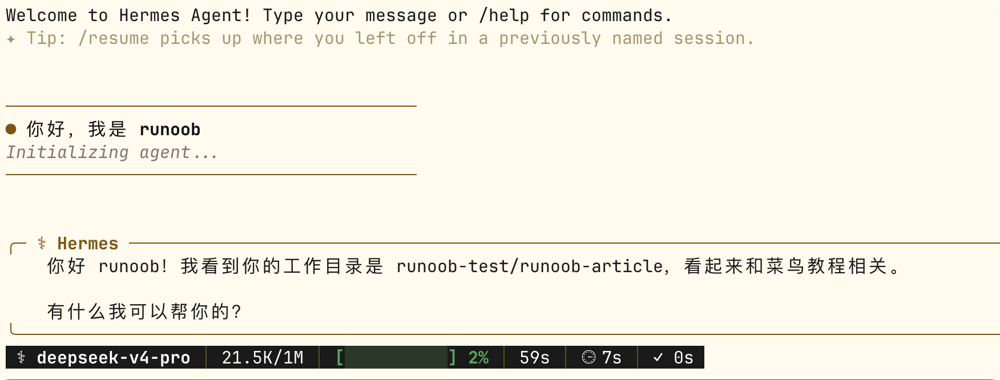

Hermes Agent CLI コマンドライン
CLI（コマンドラインインターフェース）は、Hermes Agentの最もネイティブな対話方法であり、機能が最も完全な使用入り口です。
この章では、CLIの3つの実行モード、セッション管理、スラッシュコマンド、TUIインターフェース、ショートカット操作、およびスクリプトでの使用テクニックについて体系的に紹介します。
3つの実行モード
Hermes CLIは、簡単なQAから対話型セッション、キーボードのみの操作まで、3つの実行モードを提供し、さまざまな使用シーンをカバーします。
モード1：対話型セッション（hermes chat）
これは最も一般的なモードです。継続的なマルチターン対話セッションを開始します。
対話型セッションを開始する（デフォルトのProfileを使用）：
hermes chat
起動すると対話インターフェースに入り、プロンプトが変わります。メッセージを入力してEnterキーで送信すると、Agentが返信を開始します：

対話型セッションに入ると、複数のメッセージを連続して送信でき、Agentはそれまでの対話コンテキストを記憶します。
これは日常開発における最も自然な使用方法です。まるでSlackで同僚とチャットしているかのようです。
モード2：一回限りのクエリ（-q / --query）
対話型セッションに入る必要はなく、質問を直接渡して返信を得られます。スクリプト化やクイッククエリに適しています。
例
hermes chat -q "Pythonでクイックソート関数を書いてください"
# Profileと組み合わせて使用
coder chat -q "src/main.py のコードスタイルをレビューしてください"
# Shellスクリプトで使用
hermes chat -q "以下のログからエラー行を抽出してください" < error.log
-qモードの主な特徴：
- 非対話型で、Agentが返信を完了するとすぐに終了します
- 標準の終了コードを返すため、スクリプトで成功か失敗かを判断できます
- パイプとリダイレクトをサポート
モード3：TUIターミナルインターフェース（hermes --tui）
TUI（Terminal User Interface）は、キーボードのみで操作する全画面ターミナルインターフェースを提供します。
例
hermes --tui
# TUIモードの場合：
# 上下矢印：対話履歴を閲覧
# Ctrl+N：新規セッション
# Ctrl+S：サイドバーを切り替え（ファイル、ツール履歴など）
# Ctrl+C：Agentの現在の操作を中断
# / で始まる：スラッシュコマンドを入力
TUIモードの独自の利点：
- サイドバーで、対話、ファイル変更、ツール呼び出し履歴を同時に確認できます
- キーボードのみの操作で、マウスに依存しません
- 長時間のディープワーク（深い作業）シナリオに適しています
3つのモードの比較
| モード | コマンド | 対話方法 | 適したシナリオ |
|---|---|---|---|
| 対話型セッション | hermes chat | マルチターン対話。メッセージを入力して返信を待つ | 日常開発、複雑なタスク |
| 一回限りのクエリ | hermes chat -q "..." | 単一の質問、返信後に終了 | スクリプト化、クイッククエリ |
| TUI | hermes --tui | 全画面キーボード操作、マルチパネル | ディープワーク、ファイル操作が頻繁 |
セッション管理
セッション（Session）は、CLIにおける対話の基本単位です。各セッションは独立したコンテキスト、トークン数、セッションIDを持ちます。
セッションの継続と復元
例
hermes --continue
hermes chat --continue
# セッションタイトルで復元（/titleで名前を付けた場合）
hermes -c "認証モジュールをリファクタリング"
# セッションIDで正確に復元
hermes -r 20260305_091234_abc12345
セッションを復元すると、Agentはそれまでのツール呼び出し記録やLLM推論履歴を含む完全な対話コンテキストを保持します。
新規セッションの開始
例
/new
# または
/reset
# 効果は同じ：現在のセッションを終了し、新しいセッションを開始、
# Agentはシステムプロンプトと永続メモリを再読み込みします
新しいセッションでは以前の対話コンテキストは保持されませんが、永続メモリ（MEMORY.md と USER.md）は引き続き参照できます。
セッションタイトル管理
Hermesは最初の対話の後にセッションタイトルを自動生成します。手動で名前を付けることもできます：
例
/title データベース移行案の議論
# 現在のセッション情報を表示（ID、タイトル、トークン使用量など）
/status
コンテキスト圧縮
対話履歴が長くなり、コンテキストウィンドウの上限に近づいた場合、手動で圧縮をトリガーできます：
例
/compress
# 圧縮後、古い内容は要約されてスペースが解放され、
# 新しいメッセージを送信し続けることができます。
# 圧縮されたセッションは自動リネージ（Auto-Lineage）を作成します：
#「データベース移行」→「データベース移行 #2」
自動圧縮は、Hermesがコンテキストが上限に近づいたときに自動的にトリガーします。/compressは、手動で早めにトリガーできるようにするだけです。両者の効果は同じです。
よく使うスラッシュコマンド
対話型セッションとTUIモードでは、/で始まる入力がスラッシュコマンドとして認識されます。
以下は、CLIで最もよく使われるコマンドを機能別にグループ化したものです。
セッション制御
| コマンド | 機能 |
|---|---|
| /new または /reset | 新規セッションを開始 |
| /title <名前> | 現在のセッションタイトルを設定 |
| /status | セッションID、タイトル、トークン使用量を表示 |
| /usage | 今回のセッションのトークン消費詳細を表示 |
| /compress | 対話コンテキストを手動で圧縮 |
| /resume [タイトル] | 以前に名前を付けたセッションを復元 |
タスク制御
| コマンド | 機能 |
|---|---|
| /stop | Agentが現在実行中のタスクを中断 |
| /retry | Agentに前回の返信を再生成させる |
| /undo | 前の対話を元に戻す（最後のQAペアを削除） |
| /background <タスク> | バックグラウンドセッションでタスクを非同期実行 |
/undoは対話レベルの取り消しです。セッション履歴から最後のQAペアを削除し、Agentのコンテキストを前回の返信前の状態に戻します。これは/retry（元のQAを保持してAgentに再回答させる）とは異なります。
モデルと設定
| コマンド | 機能 |
|---|---|
| /model | 現在使用中のモデルを表示 |
| /model <名前> | 指定したモデルに切り替え |
| /model list | 利用可能なすべてのモデルを一覧表示 |
| /reload-mcp | MCPサーバー設定を再読み込み |
セキュリティと承認
| 命令 | 機能 |
|---|---|
| /yolo | YOLOモードを有効にし、現在のセッションでの危険なコマンドを自動承認 |
| /yolo | 再度入力するとYOLOモードを無効化 |
| /approve | 現在承認待ちの操作を承認 |
| /deny | 現在承認待ちの操作を拒否 |
記憶とスキル
| コマンド | 機能 |
|---|---|
| /memory | 現在の記憶内容を表示 |
| /memory pending | 承認待ちの記憶書き込みを表示 |
| /memory approve all | 承認待ちの記憶書き込みをすべて承認 |
| /skills | インストール済みのすべてのスキルを一覧表示 |
| /skills search <キーワード> | ローカルおよびHubのスキルを検索 |
| /skills install <id> | スキルをインストール |
| /<skill-name> [タスク] | 指定したスキルを呼び出してタスクを実行 |
| /learn <ソース> | ドキュメントまたは説明から新しいスキルを生成 |
その他
| コマンド | 機能 |
|---|---|
| /checkpoint <ラベル> | ファイルシステムのチェックポイントを作成 |
| /rollback [番号] | 指定したチェックポイントを一覧表示または復元 |
| /cron list | スケジュールされたタスクの一覧を表示 |
| /cron pause/resume <name> | スケジュールされたタスクを一時停止または再開 |
| /suggestions | Agentの自動化に関する提案を表示 |
| /voice on/off/tts | 音声モードを制御 |
| /update | Hermesを最新バージョンに更新 |
| /help | 利用可能なすべてのコマンドを表示 |
ショートカット操作とテクニック
キーボードショートカット
対話型セッションでは、以下のショートカットキーで操作効率が向上します：
| ショートカットキー | 機能 |
|---|---|
| Ctrl+C | Agentの現在の応答またはツール実行を中断 |
| Ctrl+D | 対話型セッションを終了 |
| Ctrl+L | 画面をクリア |
| Ctrl+B（音声モード） | 押している間録音、離すと送信 |
| 上矢印 | 前の入力を呼び出す |
| Tab | ファイルパスとスキル名を自動補完 |
複数行入力
改行を含むメッセージ（コードブロックなど）を送信する場合：
例
hermes chat -q "以下のコードをレビューしてください：\n\ndef hello():\n print('world')"
# 方法2：Heredoc（Shell構文）を使用
hermes chat -q "$(cat << 'EOF'
このエラースタックを分析してください：
Traceback (most recent call last):
File "app.py", line 42, in <module>
main()
File "app.py", line 38, in main
result = process(data)
TypeError: 'NoneType' object is not iterable
修正案を提示してください。
EOF
)"
パイプとリダイレクト
-qモードは標準のUnixパイプをネイティブにサポートします：
例
cat error.log | hermes chat -q "これらのエラーログを分析して根本原因を特定してください"
# Agentの応答をファイルに保存
hermes chat -q "プロジェクトのREADME.mdを生成してください" > README.md
# パイプラインでAgentをフィルターとして使用
cat data.csv | hermes chat -q "すべてのメールアドレスを1行に1つずつ抽出してください" > emails.txt
Profileコマンドエイリアスとの組み合わせ
各Profileは専用のコマンドエイリアスを自動生成するため、-pフラグは不要です：
例
coder chat -q "この関数をリファクタリングしてください"
researcher chat -q "最新のTransformer関連論文を検索してください"
admin gateway status
# 次と同等
hermes -p coder chat -q "この関数をリファクタリングしてください"
hermes -p researcher chat -q "最新のTransformer関連論文を検索してください"
hermes -p admin gateway status
承認とセキュリティ制御
承認モード
CLIで危険なコマンドを実行すると、Hermesは承認プロンプトを表示します：
Agent 请求执行: rm -rf /tmp/build/* 原因: 清理构建缓存 [approve/deny]: _
セッション中にリアルタイムで承認または拒否を決定できます。
承認モードはconfig.yamlで設定します：
例
approvals:
mode: manual # manual（デフォルト、危険なコマンドごとに承認が必要）
# smart（智能的に判断し、リスクが低いものは自動承認）
# off（承認を無効化、推奨しません）
timeout: 60 # 承認待ちの秒数。タイムアウトすると自動拒否
YOLOモード
Agentが実行しようとしていることが安全だと確信できる場合（例えば自分がよく知るプロジェクトでの操作）、一時的に承認をスキップできます：
例
# 現在のセッションではすべてのコマンドが自動承認されます
/yolo
# Agentが操作を実行し始め、承認プロンプトは表示されなくなります...
# 再度 /yolo と入力：YOLOモードを無効化し、承認を再開
/yolo
YOLOモードは現在のセッションでのみ有効です。新しいセッションではconfig.yamlで設定された承認モードに自動的に戻ります。これにより、一時的な緩和が恒久的な脆弱性にならないことが保証されます。
スクリプトでの使用
ShellスクリプトでHermesを使用する
-qモードの終了コードと標準出力により、HermesをShellスクリプトにシームレスに統合できます：
例
# ファイルパス：scripts/auto-review.sh
# 自動コードレビュースクリプト——Gitで変更されたファイルを1つずつレビュー
# 変更されたすべてのPythonファイルを取得
changed_files=$(git diff --name-only HEAD~1 | grep '\.py$')
for file in $changed_files; do
echo "=== レビュー:$file ==="
# Hermesを使用してコードをレビューし、結果をターミナルに直接出力
hermes chat -q "以下のPythonファイルのコードスタイルと潜在的な問題をレビューしてください：
$(cat "$file")
見つかった問題と提案をリスト形式で提示してください。" 2>/dev/null
# 終了コードを確認
if [ $? -ne 0 ]; then
echo "[警告]$fileレビュー中にエラーが発生しました"
fi
echo ""
done
Git Hooksとの組み合わせ
以下はGit pre-commit hookの例です——コミット前にAgentにコードをチェックさせます：
例
# ファイルパス：.git/hooks/pre-commit
# Git pre-commit hook：コミット前にAgentがコードをチェック
# ステージングエリアで変更されたファイルのリストを取得
staged_files=$(git diff --cached --name-only)
if [ -z "$staged_files" ]; then
exit 0
fi
echo "Hermes Agentがコード変更をチェックしています..."
# Agentにステージングされた変更をレビューさせる
result=$(hermes chat -q "以下のGitステージングエリアのコード変更をレビューし、\
重大な問題（セキュリティ脆弱性、論理エラー、破壊的な変更）のみ報告してください。\
重大な問題がなければ、PASSと返信してください。\
\
変更ファイル：\n$staged_files\n\
詳細なdiff：\n$(git diff --cached)" 2>/dev/null)
echo "$result"
# Agentが重大な問題を発見した場合、コミットをブロック
if echo "$result" | grep -q "PASS"; then
echo "レビュー合格"
exit 0
else
echo ""
echo "Agentが注意すべき問題を発見しました。"
echo "問題がないことを確認した場合は、git commit --no-verify を使用してこのチェックをスキップしてください。"
exit 1
fi
定時実行
システムのcronまたはHermes組み込みのCronシステムと組み合わせて、CLIタスクを定期的に実行できます——ただし、Hermes組み込みのCronを使用することをお勧めします（によりhermes cron create）。結果をメッセージプラットフォームに直接配信できるためです。
クリックしてノートを共有
<p style="font-size:14px;">ノートはこの記事の内容を拡張したものである必要があります！</p><br> <p style="font-size:12px;"><a href="../tougao.html" target="_blank">記事の投稿は、こちらをクリック</a></p> <p style="font-size:14px;"><a href="../w3cnote/runoob-user-test-intro.html" target="_blank">登録招待コードの取得方法</a></p> <h3 class="text-muted"><i class="fa fa-info-circle" aria-hidden="true"></i> ノートを共有する前に<a href=";.html" class="runoob-pop">ログイン</a>が必要です！</h3> <p><a href="../w3cnote/runoob-user-test-intro.html" target="_blank">登録招待コードの取得方法</a></p>